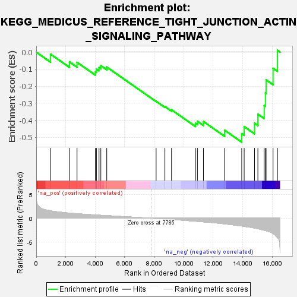
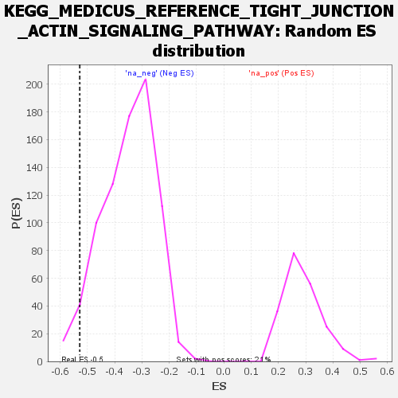

| | | Dataset | all_genes |
| Phenotype | NoPhenotypeAvailable |
| Upregulated in class | na_neg |
| GeneSet | KEGG_MEDICUS_REFERENCE_TIGHT_JUNCTION_ACTIN_SIGNALING_PATHWAY |
| Enrichment Score (ES) | -0.52829415 |
| Normalized Enrichment Score (NES) | -1.5170974 |
| Nominal p-value | 0.039092056 |
| FDR q-value | 0.44281247 |
| FWER p-Value | 1.0 |
Table: GSEA Results Summary

Fig 1: Enrichment plot: KEGG_MEDICUS_REFERENCE_TIGHT_JUNCTION_ACTIN_SIGNALING_PATHWAY
Profile of the Running ES Score & Positions of GeneSet Members on the Rank Ordered List
| SYMBOL | RANK IN GENE LIST | RANK METRIC SCORE | RUNNING ES | CORE ENRICHMENT | | 1 | ACTR2 | 972 | 1.562 | -0.0118 | No |
| 2 | TJP1 | 2253 | 1.069 | -0.0570 | No |
| 3 | ACTR3 | 2767 | 0.939 | -0.0598 | No |
| 4 | ARPC1A | 4011 | 0.678 | -0.1146 | No |
| 5 | ARPC4 | 4082 | 0.662 | -0.0989 | No |
| 6 | ARPC3 | 4258 | 0.631 | -0.0905 | No |
| 7 | ACTB | 4379 | 0.611 | -0.0793 | No |
| 8 | ARPC2 | 4781 | 0.537 | -0.0874 | No |
| 9 | CLDN20 | 8129 | -0.059 | -0.2883 | No |
| 10 | ARPC5 | 8724 | -0.171 | -0.3192 | No |
| 11 | ARPC5L | 9173 | -0.261 | -0.3384 | No |
| 12 | CTTN | 10798 | -0.630 | -0.4178 | No |
| 13 | ACTG1 | 10928 | -0.660 | -0.4057 | No |
| 14 | CLDN15 | 11337 | -0.771 | -0.4071 | No |
| 15 | OCLN | 12772 | -1.194 | -0.4580 | No |
| 16 | CLDN1 | 13934 | -1.638 | -0.4789 | Yes |
| 17 | ARPC1B | 14099 | -1.721 | -0.4369 | Yes |
| 18 | CLDN5 | 14801 | -2.067 | -0.4170 | Yes |
| 19 | CLDN11 | 15029 | -2.214 | -0.3640 | Yes |
| 20 | CLDN10 | 15457 | -2.535 | -0.3134 | Yes |
| 21 | CLDN9 | 15538 | -2.606 | -0.2396 | Yes |
| 22 | CLDN4 | 15585 | -2.642 | -0.1627 | Yes |
| 23 | CLDN23 | 16059 | -3.212 | -0.0945 | Yes |
| 24 | CLDN3 | 16357 | -4.083 | 0.0107 | Yes |
Table: GSEA details [plain text format]

Fig 2: KEGG_MEDICUS_REFERENCE_TIGHT_JUNCTION_ACTIN_SIGNALING_PATHWAY: Random ES distribution
Gene set null distribution of ES for KEGG_MEDICUS_REFERENCE_TIGHT_JUNCTION_ACTIN_SIGNALING_PATHWAY